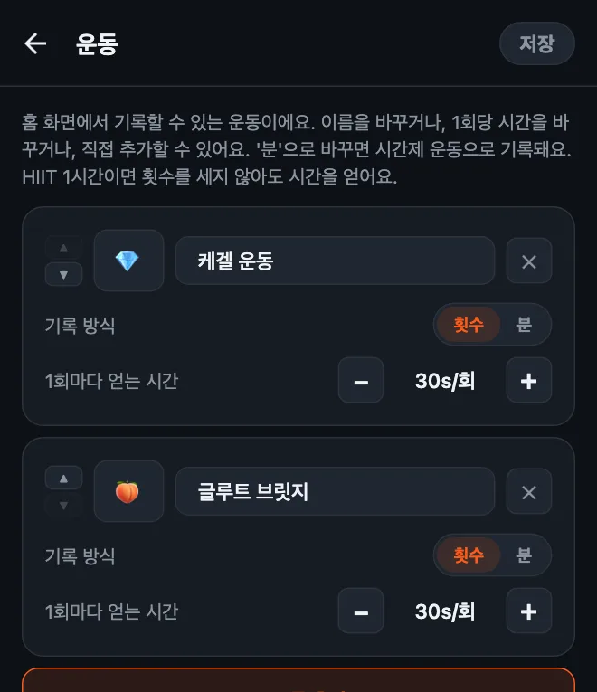
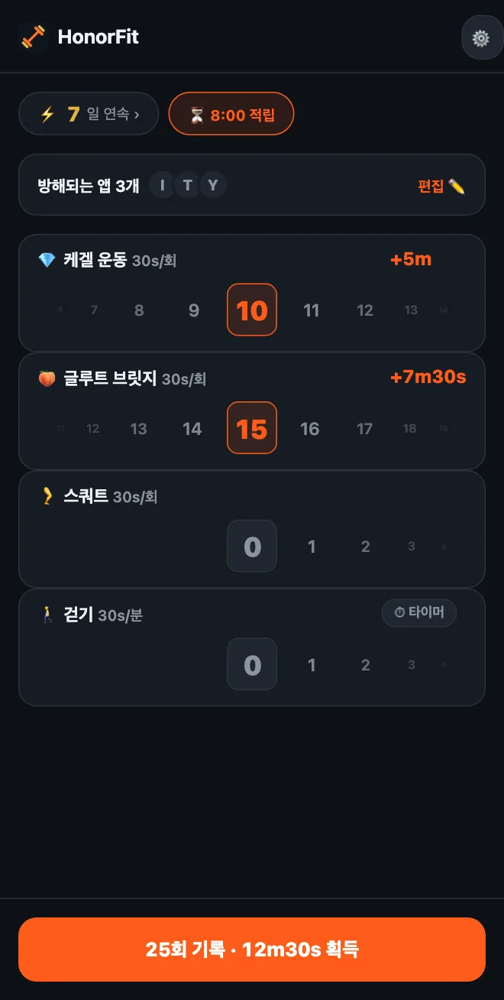

케겔 운동으로 폰 잠금 풀기
안녕하세요 여러분! 제가 HonorFit을 만든 건 저와 인스타그램 사이에 팔굽혀펴기를 끼워 넣고 싶어서였어요. 카메라가 횟수를 셀 수 있게 폰을 세워 두지 않고요(주유소에서 그러고 있던 건 제 인생 최고의 순간은 아니었어요 ㅋㅋ). 운동하고, 직접 기록하면, 앱 잠금이 풀려요.
그런데 푸시업이 모두에게 맞는 건 아니에요. 그리고 이 아이디어에 제일 잘 맞는 운동은 사실 푸시업이 아닐지도 몰라요. 바로 케겔 운동과 힙 브릿지예요. 왜 그런지, 그리고 어떻게 설정하는지 알려 드릴게요.
케겔 운동이 양심 시스템과 잘 맞는 이유
케겔 운동은 아무도 볼 수 없어요. 버스 옆자리 사람도, 회사 동료도, 당연히 폰 카메라도요. 카메라로 횟수를 세는 앱은 이건 말 그대로 셀 수가 없어요.
HonorFit은 세려고 하지 않아요. 양심 시스템으로 돌아가니까, 운동하고, 한 만큼 휠을 돌리면 끝이에요. 그래서 회의 중에도, 마트 계산대 줄에서도, 소파에 누워서도, 아무도 모르게 틱톡 시간을 벌 수 있어요.
게다가 케겔 운동 하면 다들 하는 말, “해야 하는 건 아는데 자꾸 까먹어요”도 해결돼요. 하루에도 몇 번씩 폰에 손이 간다면(뭐라 하는 거 아니에요, 저도 그래요), 그때마다 알림이 되어 주는 거죠.
힙 브릿지는 안 보이는 운동은 아니지만, 바닥이나 침대 위에서도 쉽게 할 수 있고, 도구도 필요 없고, 케겔 운동이랑 같이 하기 정말 좋아요.
설정하는 법
버전 1.15.0부터는 이게 무료예요. Pro 없이도 나만의 운동을 3개까지 추가할 수 있고, 케겔 운동과 힙 브릿지(앱에서는 ‘글루트 브릿지’)는 둘 다 한 번만 누르면 추가되는 추천 운동에 들어 있어요(Pro는 미국 기준 월 3달러 또는 한 번 결제 19.99달러고, 무제한으로 추가할 수 있어요. 가격은 나라와 통화에 따라 다르고, 스토어에서 내 지역 가격이 표시돼요). 이렇게 하면 돼요:
- 홈 화면의 톱니바퀴를 누르고, 운동 카드를 눌러요.
- 추천 운동에서 케겔 운동을 누르고, 이어서 글루트 브릿지를 눌러요. 입력할 필요도 없고, 이모지도 처음부터 붙어 있어요. 케겔 운동은 💎, 힙 브릿지는, 네, 🍑예요.
- −/+ 버튼으로 1회마다 얻는 시간을 정해요(제 추천 값은 아래에 있어요).
- 안 쓸 운동은 ✕로 지우고(턱걸이라든지?), 저장을 눌러요.

시간제 운동까지 포함한 편집 화면 전체 사용법은 HonorFit에서 나만의 운동 설정하는 법에 정리해 뒀어요.
1회당 스크린타임은 얼마가 좋을까?
저라면 이렇게 시작할 거예요.
| 운동 | 1회마다 얻는 시간 | 보통 한 세트면 |
|---|---|---|
| 💎 케겔 운동 | 30초 | 10회 = 5분 |
| 🍑 힙 브릿지 | 30초 | 15회 = 7분 30초 |
| 🚶 걷기 (시간제) | 1분마다 30초 | 20분 걷기 = 10분 |
그러니까 케겔 운동 10회에 힙 브릿지 15회면 12분 30초쯤 돼요. 여기서부터 조정해 보세요. 시간이 너무 쉽게 쌓이면 값을 낮추고요. 하지 않은 횟수를 기록하고 있는 나를 발견하면, 가격이 너무 비싼 거니까 가격을 낮추세요(1회당 시간을 올리세요).

케겔 운동에 대해 한 가지: 많이 한다고 좋은 게 아니에요. MedlinePlus나 Cleveland Clinic(둘 다 영어 사이트예요) 같은 건강 정보 사이트에서는 보통 10회 정도씩 하루에 몇 번을 이야기하고, 너무 많이 하면 근육이 지나치게 긴장할 수 있다고 해요. 그러니까 유튜브 한 시간 보려고 케겔 운동 100회, 이런 건 하지 말아 주세요! 그래서 저는 케겔 운동에는 1회당 적당한 값을 주고, 큰 시간은 힙 브릿지나 스쿼트, 걷기로 채우는 걸 추천해요.
기본 동작
저는 앱 개발자지 트레이너나 물리치료사가 아니라서, 여기 적는 건 대략적인 설명일 뿐이에요. 제대로 된 방법은 위 링크에 있어요.
- 케겔 운동: 소변을 참을 때 쓰는 근육을 조이고, 몇 초 버틴 다음, 몇 초 동안 완전히 힘을 풀어요. 이게 1회예요. 숨은 계속 쉬고, 배나 허벅지, 엉덩이에는 힘을 주지 않도록 해 보세요. (소변을 중간에 멈추는 건 근육 위치를 한 번 찾아보는 방법이지, 평소에 연습하는 방법이 아니에요.)
- 힙 브릿지: 등을 대고 누워서 무릎을 굽히고 발바닥을 바닥에 붙여요. 엉덩이에 힘을 주고 어깨부터 무릎까지 일직선이 될 때까지 골반을 들어 올린 다음, 잠깐 멈췄다가 천천히 내려와요. 이게 1회예요. 맨 위에서 케겔 운동을 같이 하는 분들도 있어요.
임신 중이거나 출산 후이거나, 골반 통증이 있거나, 케겔 운동을 할 때 아프다면 먼저 의사나 골반저근 전문 물리치료사와 상담하세요. 내 몸에 맞는 방법을 알려 줄 거고, 때로는 ‘지금은 케겔 운동 말고’라는 답이 나올 수도 있는데, 그래도 괜찮아요. 그럴 땐 대신 추천받은 운동으로 HonorFit을 설정하면 돼요.
몇 가지 팁
- 운동은 서너 개만. 케겔 운동, 힙 브릿지, 스쿼트, 걷기 정도면 앉아 있을 때, 누워 있을 때, 밖에 나가 있을 때를 다 커버할 수 있어요. 운동마다 휠이 하나씩 생기니까 적을수록 편해요.
- 밖에 나가는 날엔 시간제 운동을. 운동을 분으로 바꾸거나(아니면 걷기나 요가 추천을 누르거나) 하면, 산책이나 수업으로도 시간을 벌 수 있어요.
- 저장된 루틴(Pro, 설정에서 켜요)을 쓰면 ‘케겔 운동 10회 + 힙 브릿지 15회’ 같은 횟수 조합을 3개까지 저장하고 한 번에 적용할 수 있어요.
- 전부 다 말고 한두 개만 차단하세요. 저녁 시간을 잡아먹는 그 앱만요.
케겔 운동도 별로라면, 저강도 운동이랑 책상에서 할 수 있는 운동도 정리해 뒀어요.
HonorFit Blocker는 iPhone과 Android용 무료 앱 차단 앱이에요. 양심 시스템, 카메라 없음, 모든 데이터는 내 폰 안에만 있어요. 케겔 운동, 힙 브릿지, 그리고 나만의 운동 3개까지는 무료예요. 마음에 들어 하실 분도 있을 거예요!